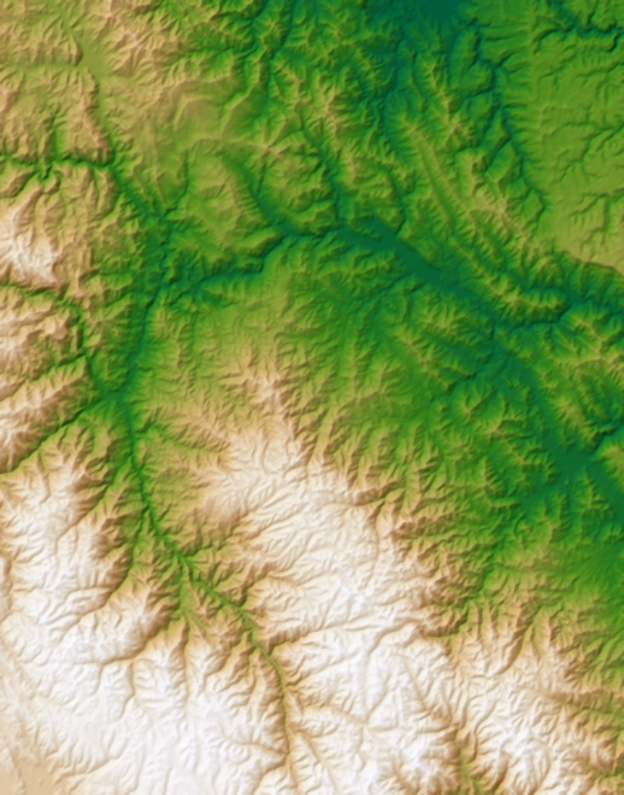
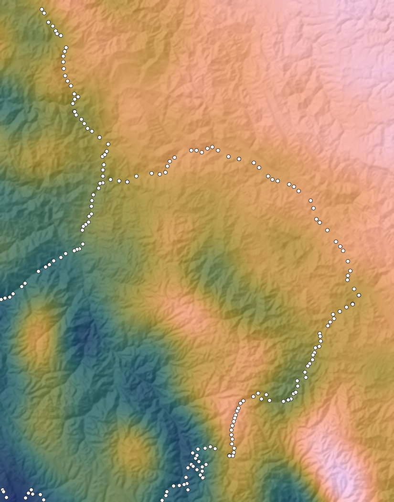
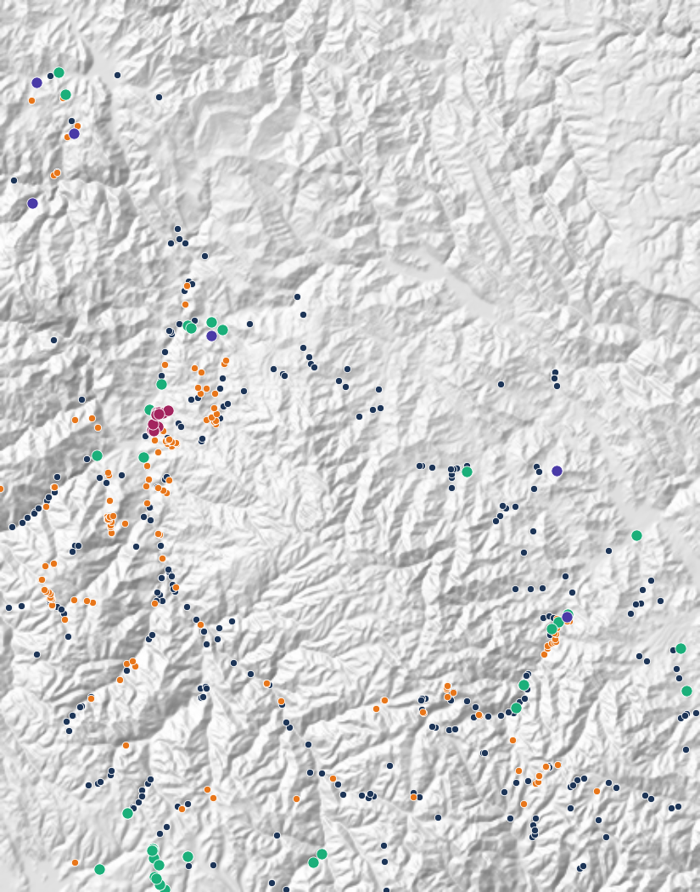

TRABAJO FINAL / GEOCOMPUTACIÓN 1GEO20 / PUCP 2026-II
Prospectivity for
"U - REE"
Peru Central
Validación de fuentes públicas, 40 variables integradas y cinco modelos de aprendizaje automático para uranio y tierras raras en la Cordillera Oriental de Junín y Pasco.
Carlos Manuel Gutiérrez Cruzado / Félix Bryan Cordero Escobar
Pontificia Universidad Católica del Perú, Lima
CORDILLERA ORIENTAL / JUNÍN Y PASCO

1Relieve
Copernicus DEM GLO-90

2Gravedad
XGM2019e y 192 estaciones de INGEMMET

3U en roca
606 rocas de cinco fuentes

4Zonas prioritarias
Consenso de cinco modelos para U y ΣREE
794rocas analizadas
40variables integradas
5algoritmos y su consenso
73 km²zona prioritaria U + REE